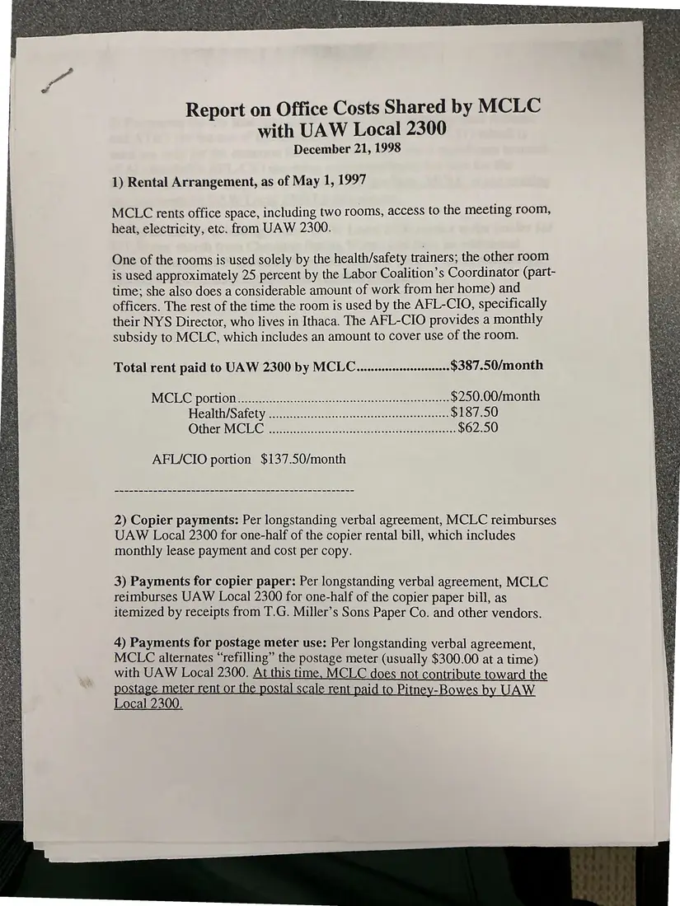
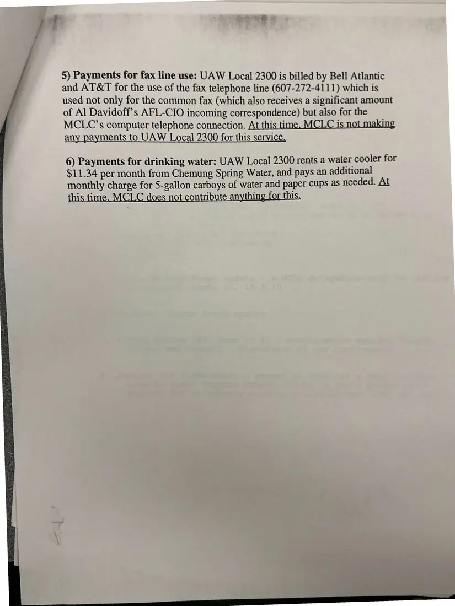

Report, 2 pages
Report on office costs shared by MCLC with UAW Local 2300
December 21, 1998
Details how the council shared rent, copier, postage, fax, and water costs with UAW Local 2300 at 109 West State Street, Ithaca, and which costs the council was not yet paying. Page 2 precedes page 1 in the source.
Download or cite this itemPages


(open zoom view)Read the page text (machine-read, contains errors)
This text was generated automatically from the photograph and has not been corrected. The image is the authoritative record.
Report on Office Costs Shared by MCLC with UAW Local 2300 December 21, 1998 1) Rental Arrangement, as of May 1, 1997 MCLC rents office space, including two rooms, access to the meeting room, heat, electricity, etc. from UAW 2300. One of the rooms is used solely by the health/safety trainers; the other room is used approximately 25 percent by the Labor Coalition’s Coordinator (part- time; she also does a considerable amount of work from her home) and officers. The rest of the time the room is used by the AFL-CIO, specifically their NYS Director, who lives in Ithaca. The AFL-CIO provides a monthly subsidy to MCLC, which includes an amount to cover use of the room. Total rent paid to UAW 2300 by MCLC...........sscscescseoeee $387.50/month MGIC@ portion. he a ei nee $250.00/month Health) Satetyeccc nen. ik cnee cee cee $187.50 Other: MCl Gi A eG Nec eee $62.50 AFL/CIO portion $137.50/month we ee ee ee ee ee ee ee ee ee ee ee we ee ee ee ee eee 2) Copier payments: Per longstanding verbal agreement, MCLC reimburses UAW Local 2300 for one-half of the copier rental bill, which includes monthly lease payment and cost per copy. 3) Payments for copier paper: Per longstanding verbal agreement, MCLC reimburses UAW Local 2300 for one-half of the copier paper bill, as itemized by receipts from T.G. Miller’s Sons Paper Co. and other vendors. 4) Payments for postage meter use: Per longstanding verbal agreement, MCL-C alternates “refilling” the postage meter (usually $300.00 at a time) with UAW Local 2300. At this time, MCLC does not contribute toward the meter rent or Stal scale rent pai Pitney-Bow AW Local 2300.


(open zoom view)Read the page text (machine-read, mostly readable)
This text was generated automatically from the photograph and has not been corrected. The image is the authoritative record.
5) Payments for fax line use: UAW Local 2300 is billed by Bell Atlantic and AT&T for the use of the fax telephone line (607-272-4111) which is used not only for the common fax (which also receives a significant amount of Al Davidoff’s AFL-CIO incoming correspondence) but also for the MCLC’s computer telephone connection. At this time. MCLC is not making any payments to UAW Local 2300 for this service. 6) Payments for drinking water: UAW Local 2300 rents a water cooler for $11.34 per month from Chemung Spring Water, and pays an additional monthly charge for 5-gallon carboys of water and paper cups as needed. At
See something wrong, or recognize a person or event? Send a correction. If you hold rights in this item or think it should not be public, write to the same address.